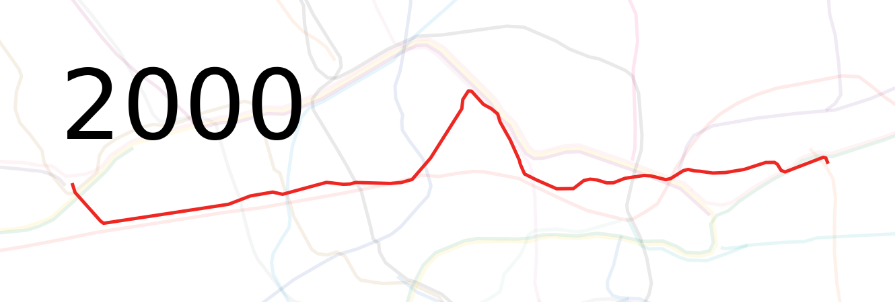

One-off Rapid Transit Maps for Scale Comparison with Timelines
Disneyworld(modulo stop spacing)
 Honolulu 2025
Honolulu 2025 Indianapolis
Indianapolis Kansas City 1895
Kansas City 1895 London Mail Rail
London Mail Rail(no passengers)
 Louisville 1895
 Morgantown
Morgantown(not year round)
 New York 1870
New York 1870(horse)
 Rochester 1930
Rochester 1930 Seattle 2025
Seattle 2025 Sioux City 1895
Sioux City 1895
Based on frequent midday service at the end of the year in question (notes).
Scale: = 10 km (30 CSS pixels per km)
Please send any corrections or questions to threestationsquare at gmail dot com.
See also: rapid transit timelines - miscellaneous timelines and maps